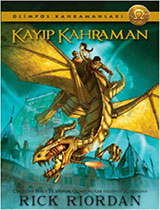
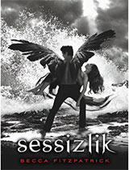
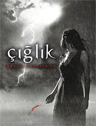

www.kitaphakkında.com.tr
Kitaplar hakkında bir çok şey bizde ❤
Fantastik Kitap
Olimpos Kahramanları - Kayıp Kahraman Kitabı
|  |
| Kitabın Yazarı:Rick Riordan |
| Kitap Türü:Çocuk Kitapları |
| Yayınevi:Doğan Egmont Yayıncılık |
| Yayınlandığı Yıl:2010) |
| Sayfa Sayısı:552 |
| Kitap Puanı:9.2/10 |
|
|
Arka Kapak Bilgisi
Yunan efsaneleri günümüzde yaşamaya devam ediyor! Percy Jackson ve Olimposlular macerasından sonra yepyeni bir seri başlıyor: Olimpos Kahramanları. İlk beş kitabın sonunda, büyük bir savaşın ardından Melez Kampında bıraktığımız dostlarımız, yen, melezlerle birlikte yepyeni bir serüvene adım atıyorlar. Ancak büyük bir sorun var: Perccy Jackson kayıp! İşte Olimpos Kahramanları serisinin ilk kitabı Kayıp Kahramanda tanışacağımız üç yeni melez: JASONın bir sorunu var. Hafızasını tamamen keybetmiş. Jason buraya nasıl geldi? Burası neresi? Hatta Jason kim? Hiçbir şey bilmiyor ama bir şeyden çok emin. Bu işte bir terslik var. PIPER bir sır saklıyor. Ünlü bir kişi olan babası üç gündür kayıp. Jason ve Leoyla birlikte Melez Kampı adlı bir yere götürülüyor. İçinden bir his burada her şeyin açıklamasını bulacağınısöylüyor ama her şeyi öğrenmek isteyip istemediğinden emin değil. LEO ok becerikli. Melez Kampına yerleştirildiği, alet edavatla dolu kulübeyi görünce kendini hemen evinde hissediyor. Kulübe arkadaşları bir tanrının oğlu olduğunu iddia edyor. Bunun sürekli hayaletler görmesiyle bir ilgisi olabilir mi acaba?
Olimpos Kahramanları - Kayıp Kahraman Kitabı Özeti
Jason uyandığında kendini bir okul otobüsünde bulur. Üstelik yanında onun ellerini tutan bir kız ve durmadan şakalar yapan hareketli bir çocuk vardır. Çevresinde, yaşıt olduğunu anladığı çocuklar şarkılar söylerken onunsa büyük bir problemi vardır. Çünkü kim olduğu hakkında hiçbir fikri yoktur. Yanındakiler ise o uzun süredir oradaymış gibi davranıyorlardır. Çok geçmeden ellerini tutan ve sevgili olduklarını iddaa eden Piper adındaki kıza ve hareketli kıvırcık saçlı çocuğa- Leo’ya- geçmişine ait bir şey hatırlamadığını ve onları tanımadığını söyler. Leo ve Piper ona inanmazlar çünkü onlara göre Jason yaklaşık bir yıldır onlarladır. Okul otobüsü durduğunda,sorumlu koçları Hedge, onları yönlendirir. Bu sırada ani bir fırtına da baş gösterir. Çıkan fırtına cisim almaya başlar. Diğer çocuklar bu olayı sıradan bir fırtına olarak algılarken Jason, Piper ve Leo bunların mitolojik yaratıklar olduğunun farkına varmışlardır. Koç Hedge de öyle…
Onları bu yaratıklardan kurtarmak için kendini feda eder ve jason sanki daha önce defalarca yapmış gibi cebinden bir bozuk para çıkararak havaya atar. Atılan para bir kılıca dönüşür ve elektrik alır. Leo ve Piper şaşkınlıkla olanları izlerken, havadan uçan bir at –Pegasus- iner. Sıtında da iki kişi taşımaktadır. Biri renkli gözlü iri bir çocuktur. Diğeri ise; sarışın ve güzel bir kız olup insanı çarpan türden parlak gri gözleri vardır. Yere indiklerinde kız etrafa sinirle bakar ve gökyüzüne bakarak bağırmaya başlar. Daha sonra tek kelime etmeden onları melez kampına götürür. Jason , diğer iri çocuktan, sarışın kızın kayıp erkek arkadaşını aradığını öğrenir. Kampa geldiklerinde sarışın kız adının Annabeth olduğunu zeka,bilgelik ve savaş tanrıçası Athena’nın kızı olduğunu söyler. Melez kampı da; hala hayatta olan antik yunan tanrılarının insanlardan olan melez çocuklarının yaşaması içindir.Yarı tanrı çocuklar için dışarıdaki hayat çok tehlikeli olduğundan burada yaşar ve savaş eğitim alırlar.Üstelik tanrı olan anne ya da babalarına ait kulübede kalırlar. Annabeth, onların da yarı tanrı olduğunu söyler. Yalnız tek sorunları şudur ki: hiç biri henüz hangi tanrının çocuğu olduğunu bilmemektedirler.
Leo; bir oyun esnasında maden, işçilik, makine ve tamirci tanrı olan Hephaistos ‘un oğlu olduğunu öğrenir. Piper ise güzellik ve aşk tanrıçası olan Afrodit’in kızıdır. Jason da gökte şimşekler çaktırınca, tanrıların kralı Zeus’un oğlu olduğunu öğrenirler. Melez kampından aldıkları görevle, tanrıların kraliçesi ve Zeus’un karısı Tanrıça Hera’yı kurtarmak için yola çıkarlar. Bu görevde baş düşmanları ise toprak tanrıça yani Gaia ‘ dır. Gaia, birinci çocukları olan kötü titanların tanrılar tarafından yok edilmesiyle ikinci çocuklarını yaratır. Bu çocukların adı Gigantlar olup, her bir gigant bir tanrıyı yok etsin diye yaratılmıştır. Bu sebeple onları öldürmek için bir tanrının yardımı gerekmektedir. Ancak tanrılar etkisiz durumdadır.
Bu sebeple bu üçlünün hayatta kalma şansları çok küçük olmakla birlikte, her biri başka bir sebepten ötürü Hera’yı kurtarmak istemektedirler. Jason’ın hafızasını çalan ve onu bu kampa getiren Hera’ dır. Onu bularak hafızasını geri getirmeyi düşünmektedir. Piper’ın babası bir gigant tarafından kaçırılmıştır ve babasını geri alabilmesi için gigantın tek şartı jason ve Leo’nun ölmeleridir. Leo da küçükken sahip olduğu çılgın bakıcısının kılık değiştiren Hera olduğunu anlamıştır. Böylece Leo bronz bir ejderhayı kendilerini taşımaları için eğitir ve yeniden proglamlar. Yolda onlar için en büyük sıkıntı teşkil eden karlar tanrıçasıyla karşılaştıklarında, rüzgarlar tanrısı Aeolus’un yardımını alarak kaçarlar. Piper’ın annesi Afrodit, onlara Piper’ın babasına ulaşmaları için gerekli yardımı sağlar. Piper, babasını kurtarırlarken Jason ve Leo’ya asla ihanet etmez. Bu sırada da Jason’la arasında farklı bir şeyler olduğunu da hissetmeye başlamıştır.
Nihayet Hera’nın tutsak edildiği yere vardıklarında, bir tanrıçayı bile tutsak edebilecek olan gigantlar kralı ile karşılaşırlar. Bu gigant, Zeus’a karşılık yapılmıştır. Hera’yı kaçırmasının sebebi de onun enerjisini kullanıp yeniden güçlenmektir. Leo ve Piper,kafesi açarlar. Hera dışarı çıktığında, gigant kralı henüz güçlü olmadığı için kaçar. Görevden sağ çıkmayı başarabilen bu üç yarı tanrı, kampa geri dönerken, Jason da yavaş yavaş geçmişini hatırlamaya başladığını hisseder. Jason, Roma kampından gelmektedir. Üstelik o kampın yani -antik romaca- Lejyonun lideridir. Hera ise onun hafızasını silerek, onu Yunan kampının lideri yapmış, belli melezlerle bir araya getirmiştir. Neler olduğunu fark ederek, kampın önemli meselelerinin konuşulduğu büyük eve gider. İçeride tüm tanrıları temsilen bir çocuğun, kamp müdürünün, Annabeth, Leo, ve Piper’ın da orada olduğunu görür. Onlara düşündüklerini anlattığında Annabeth’in de; kayıp erkek arkadaşı olan denizler tanrısı Poseidon’un oğlu Percy Jackson’ın şuan nerede olduğunu anladığını fark eder.
Tanrıça Hera, tanrıların gigant savaşında melezlere ihtiyacı olduğunu fark edip, yunan ve roma kamplarının liderlerini yer değiştirmiştir. Böylece roma kampının lideri Jason Grace, yunan kampının lideri, yunan kampının lideri Percy Jackson ise Roma kampının lideri olmuştur. Ve tabii ki her ikisi de geçmişlerine dair hafızaları silinmiştir. Kitap seriyi oluşturan büyük kehanetle devam eder:
“Yedi melez çağrıya kulak verecek, dünya fırtına ya da ateşte yok olacak, son nefesleri pahasına bir söz verilecek ve düşmanlar ölümün kapılarına dizilecek…”
Sessizlik Kitabı
|  |
| Kitabın Yazarı:Becca Fitzpatrick |
| Kitap Türü:Yabancı Romanlar |
| Yayınevi:Pegasus Yayınları |
| Yayınlandığı Yıl:2013 |
| Sayfa Sayısı:416 |
| Kitap Puanı:9/10 |
|
|
Arka Kapak Bilgisi
Geride sadece sessizlik kaldığında gerçek duyulabilir mi?
Patch ve Nora arasındaki çığlık, yerini sessizliğe bırakmıştır. Patch'in karanlık geçmişindeki sırların üstesinden gelmiş… birbirinden tamamen farklı iki dünya arasında bir köprü kurmuş… ihanet, sadakat ve güven duyguları zorlu sınavlardan geçmiştir. Ve bütün bunlar, cennet ve dünya arasındaki sınırları aşan bir aşk uğruna göze alınmıştır. Birbirlerine duydukları sarsılmaz güven haricinde hiçbir şeye sahip olmayan Patch ve Nora, uğruna çaba harcadıkları her şeyi ve aşklarını paramparça edebilecek bir güce karşı umutsuz bir savaşa başlarlar...
"Becca Fitzpatrick'in kaleme aldığı aşk büyüleyici."
The Book Cellar
"Becca Fitzpatrick harika karakterler yaratmada eşsiz bir yeteneğe sahip. Nora ve Patch'in arasındaki çekim, insanın kalbini yerinden oynatıyor!"
Strph Su Reads
"Unutulmaz karakterler, harika diyaloglar, etkileyici bir espri anlayışı ve karanlık olduğu kadar merak uyandıran bir olay örgüsü. hush, hush serisi, okuyucuyu kendinden geçiriyor."
-Reviewer X-
Sessizlik Kitabı Özeti
Sessizlik, Becca Fitzpatrick’in Hush Hush serisinin 3. kitabı ve kaçınılmaz olan son savaşa doğru bir geçiş sunuyor fakat kitabın sonu ile savaşın tarafları son kitabı okunması şart hale getiriyor.
Aslında Sessizlik romanının sonu biraz beklenilenden farklı gelişiyor. Çok daha karmaşık ve insanı son kitap için merak içinde bırakacak bir son beklerken basit bir şekilde bitiyor fakat o basitliğin ardından gelen gerçek Nora ve Patch aşkını çok daha karmaşık hale getiriyor.
Serinin ikinci kitabı olan Çıklık’ta Nora’nın gerçek babası Hank sürpriz bir ziyaret yapmış ve Nora ile Patch’i beklenmedik bir şekilde yakalamıştı. Üçüncü kitap Sessizlik neler olduğunun merakını gidermekten öte merakı daha da arttıracak bir şekilde başlıyor.
Hank ve Patch mezarlıkta buluşuyorlar ve Patch Hank’ten Nora’yı serbest bırakmasını istiyor. Fakat Hank onu istediğini elde etmek için kullanmak istiyor ve Patch’e anlaşma sunmaya çalışıyor. Onu dinlemeyen Patch Hank’i yere yatırıp Nora’nın yerini söylemesi için ona işkence etmeye başlıyor. Patch’in gücünün beklediğinden çok daha fazla olması Hank’i şaşırtıyor fakat ne yaparsa yapsın onu öldüremeyeceğini bildiği için konuşmuyor. Sonunda Hank’in adamları imdadına yetişiyor ve Patch’i durduruyorlar. Patch onlar için bile çok güçlü olduğunu bilmesine rağmen onları öldüremeyeceğinden dolayı bir şey yapamıyor. Hank’e Nora’nın hayatına karşı son kozunu sunuyor. Hank, Patch’in kanatlarını kopartıyor ve onun için ajanlık yapması için anlaşma yapıyor. Karşılığında yaz sonunda Nora’yı serbest bırakacak ve ona zarar vermeyecektir.
Nora mezarlığın ortasında uyanıyor ve buraya nasıl geldiğini hatırlamıyor. Mezarlıkta karşılaştığı kişi onun uzun süredir arandığını söylediğinde ona inanmıyor ve korkarak kaçıyor. Polis tarafından bulunduğunda ve gerçekler söylendiğinde ise tam bir şok geçiriyor. Hayatındaki son 5 ayı hatırlamıyordur. Son hatırladığı şey okula gitmesi gerektiği ve biyoloji dersine girmesi gerektiğidir.
Nora onu kimin kaçırdığını araştırmaya başlar ve Vee’nin yardımı ile de kaybolan zamanı anlamaya çalışır. Fakat Vee de ona pek bir şey sunamaz. Vee’in hafızasından da Rixon tamamen silinmiştir. Nora’nın hayatındaki halüsinasyon devam eder fakat hiçbir şey hatırlamadığı için çevresinde olanlara da anlam veremez. Dahası annesi Mercie’nin babası olan Hank ile ilişkiye başlamıştır ve Nora bunu kaldıramaz.
Bir akşam Nora, annesi ve Hank’e akşam yemeğinde katılmak zorunda bırakılmıştır. Burada Mercie ile karşılaşınca sinirlenir ve yemeği terk eder. Telefonu ve arabası olmadığı için akşam vakti yürüyerek köşedeki yerden telefon etmek ister fakat bir şeyler yanlış gitmektedir. Nora kendini bir soygunun içinde bulur ve dahası kaçmak istediğinde imkansız olan şeyler görür fakat anlam veremez. Kendini yeryüzüne inmiş melekler ile onların hakim olmaya çalıştığı ölümsüzün kavgasının ortasında bulur. Nora için hayatın sonu gelmişken Jev onu gelip kurtarır. Nora Jev’e karşı farklı bir şeyler hisseder fakat buna anlam veremez.
Nora silinen son 5 ayı hatırlamaya çalışırken imdadına onu öldürmeye çalışan Scott yetişir. Scott Black Hand’den kaçmak için uzun süre saklanmış ve Nora’nın geri döndüğünü duyunca geri dönmüştür. Scott yaşanan her şeyi Nora’ya anlatır fakat Scott Jev adında birini tanımaz. Nora Scott ile anlaşma yapar ve Hank’in peşinden gitmeye karar verirler fakat işler pek istedikleri gibi gitmez. Nora tam yakalanacak iken imdadına yine Jev yetişir. Jev sonunda Nora ile her şeyi paylaşmaya karar verir. Nora Jev ile Patch’in aynı kişi olduğunu öğrenir. Onun kanat yarasına dokunur ve kendini kaçırılma anında bulur.
Patch ve Nora, Hank’i alt etmek için plan yapmaya başlarlar fakat Hank’in gerçek planını anlayamazlar. Patch eski bir dost olan Dabria’dan yardım ister. Patch Dabria ile çalışırken Nora da Scott ile Hank’in peşine düşer fakat Hank’in planları beklenilenden daha büyüktür.
Cığlık Kitabı
|  |
| Kitabın Yazarı:Becca Fitzpatricka |
| Kitap Türü:Yabancı Romanlar |
| Yayınevi:Pegasus Yayınları |
| Yayınlandığı Yıl:2011 |
| Sayfa Sayısı:408 |
| Kitap Puanı:9/10 |
|
|
Arka Kapak Bilgisi
Nora Grey'in hayatı mükemmellikten hâlâ çok uzaktadır. Hayatına kastedilmiş olması hoş bir deneyim olmasa da en azından bu durumun içinden bir koruyucu melek sahibi olarak çıkmıştır. Gizemli, çekici ve muhteşem bir koruyucu melek. Ama Nora'nın hayatındaki yerine rağmen, Patch'in hareketleri kesinlikle meleksi değildir. Hatta her zamankinden daha anlaşılmaz görünmektedir;
tabii bu mümkünse.
Hayatındaki gerçeklerin ne olduğunu umutsuzca öğrenmek isteyen Nora, cevaplara ulaşabilmek için kendisini giderek tehlikeli hale gelen durumların içerisine sokar. Ama belki de bazı şeyler olduğu gibi bırakılmalıdır, zira gerçek, güven duyduğu her şeyi ve herkesi yok edebilir.
"Yılın en ateşli serisi."
-SUGAR MAGAZINE-
"Sürükleyici, heyecan verici bir kitap. Doğaüstü aşk hikâyelerinin hayranlarını kendine tutsak edecek."
-PUBLISHERS WEEKLY-
Çığlık Kitabı Özeti
Amerikalı yazar Becca Fitzpatrik Hush Hush serisinin ilk kitabı olan Fısıltı ile herkesin büyük beğenisini kazanmıştı ve o kitaptan sonra hikayenin seri haline gelmesi kaçınılmazdı. Beklenen talebe karşı veren ünlü yazar ilk kitabın üstüne üç kitap daha ekleyerek Hush Hush’ı dört kitaplık bir seri haline getirdi. Çığlık romanı da bir anlamda hem yeni serinin ilk kitabı hem de tüm serinin ikinci kitabı diyebiliriz.
Yeni serinin ilk kitabı gibi olmasının nedeni planlı bir kitap olmaması diyebiliriz. Seri haline getirilmesi ile birlikte Becca Fitzpatrick konuyu yeniden kurgulamış ve ilk kitaba biraz bağlantılı olarak yep yeni kurgu ortaya çıkartmış.
Çığlık bir anlamda dört kitaplık serinin en kötü kitabı da diyebiliriz. İlk kitap ve yeni kurgu ile bağlantı kurabilmek için geçiş kitabı olmuş ve bu yüzden çok fazla tanımlama ve uzatma görebiliyoruz. Bunun yanında gizem sonuna kadar devam ettiği için kitabı elde bırakmak da pek mümkün değil. Kitabın sonuna geldiğinizde ise yeni hikayeyi kavrıyorsunuz ve bir sonraki kitabı okumak için can atıyorsunuz.
Serinin ilk kitabı olan Fısıltı’da kahramanımız Nora’yı herkes öldürmeye çalışmış fakat kimse başaramamıştı. Son katiline imkan vermemek için de Nora kendini feda etmiş fakat Patch sevdiği kadının kendini feda etmesini kabul etmemiş ve onun yaşamasını sağlamıştı. Bunun üzerine de Patch yeniden bir melek olmuş ve kanatlarını geri kazanmıştı. Dahası koruyucu melek olarak Nora’yı korumakla görevlendirilmişti.
Çığlık kitabı işte iki aşığın birbirine olan aşkları ve cicim zamanları ile başlıyor. Nora git gide Patch’e daha fazla aşık oluyor ve sonunda bir gece Patch’e onu ne kadar çok sevdiğini itiraf ediyor. Fakat şaşırtıcı olan Patch ona karşılık vermiyor ve birden bire oradan ayrılıyor. Bunun üzerine ergenlik takıntılarına başlayan Nora aşkını sorgulamaya başlıyor.
Nora’nın en nefret ettiği kız olan Marcie Patch’ın gece yarısı penceresinin önünde ne yaptığını Nora’ya sorması ile Nora daha da sinirleniyor. Patch de ona istediği cevapları veremeyince aralarındaki bağ kopmaya başlıyor.
Bu sırada kasabaya Nora’nın annesinin eski bir arkadaşı oğlu(Scott) ile taşınıyor ve ikili Scott ile Nora’nın arasını yapmaya çalışıyor. Scott’taki gizemi fark eden Nora yine merakına yeniliyor ve onu araştırmaya başlıyor. Dahası onun ilgisini kullanarak Patch’i kıskandırmaya ve onu kızdırmaya çabalıyor. Fakat Patch’in de Marcie ile yakınlaşmasını görmesi ile birlikte aralarındaki ilişkiyi daha da koparıyor ve dahası Patch’den intikam almak için kendi hayatını sürekli tehlikeye atıyor.
Nora bu zaman zarfında babasının görüntülerini görmeye ve dahası yine onu öldürmeye çalışan birileri olduğunu görmeye başlar. Bu onda babasının katilinin kim olduğuna dair bir merak da başlatır. Gizemli bir şekilde Black Hand adındaki bir adamın varlığı öğrenir ve babasını öldürenin o olduğuna inanır. Scott’un gerçek kimliğini öğrenmesi ve Scott’un Black Hand ile bağlantısı sonrası ise kendini daha fazla tehlikeye atar. Son olarak Patch’in eski takma adının Black Hand olması nedeni ile babasını onun öldürdüğünü öğrenir ve Patch’i cehenneme göndermek için çabalamaya başlar.
Nora, Scott’u araştırırken ona ait olan ve Black Hand’in simgesi olan yüzlüğü çalar. Bunu öğrenen Scott yüzlük olmadan öleceğini düşündüğü için Nora’nın peşine düşer. Nora’yı Vee ve onun yeni sevgilisi olan Patch’in en yakın dostu Rixon kurtarır. Fakat Scott güçlerinin farkına yeni yeni varır ve polisin elinden kaçarak tekrar Nora’nın peşine düşer.
Nora tekrardan kendini ölüm kalım savaşının içinde bulur. Fakat babasının gerçek katilini öğrendiğinde artık her şey için çok geçtir. Silah ateşlenmiştir ve kurşun Nora’nın bedenini delip geçmiştir…